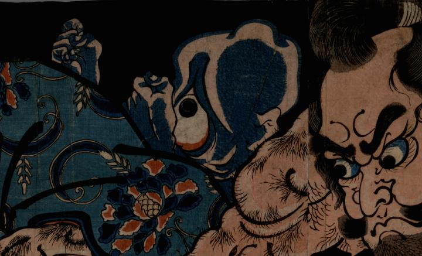

男たちの背後に顔を出す化物。顔は青黒く歪み、大きな目は赤く血走っている。
出典：親書誌：U426_nichibunken_0308：[酒田公時・碓井貞光・源次綱と妖怪]；サカタ キントキ ウスイ サダミツ ゲンジ ツナ ト ヨウカイ／日付：2014／資源識別子：U426_nichibunken_0308_0003_0000
Copyright (c)2010- International Research Center for Japanese Studies, Kyoto, Japan. All rights reserved.